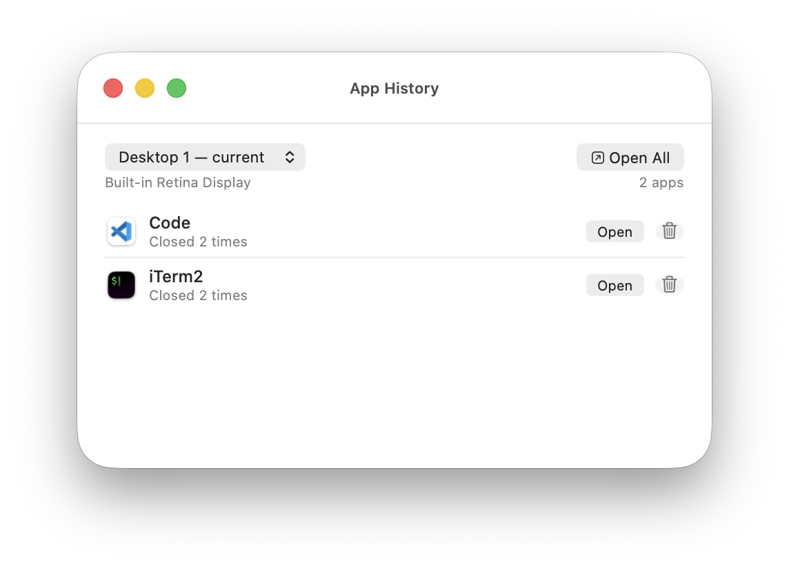
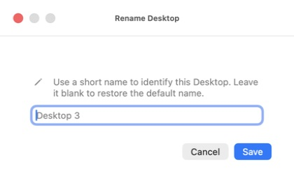

SpaceLabels for macOS
Name every Space on your Mac.
When you switch Spaces, instantly see its name and the apps in that context — without opening Mission Control.
Version — · macOS 15 or later · — · Free
Checking the public Release before enabling the download…
The download is unavailable because the public Release could not be validated. No alternative file will be offered.
 SpaceLabels
A native signal for your Spaces.
SpaceLabels
A native signal for your Spaces.
Understand the context at a glance.
The product appears only when there is something useful to show. Then it gets out of the way so you can keep working.
The name appears. You keep going.
The HUD shows the active Space and up to four visible apps. It never takes focus and fades away after the interval you choose.
The current Space and its context.
Show an optional Space name from Preferences beside the new menu bar icon, recognize the monitor context and its apps, rename the Space, or open History without hunting for another window.

Edit every Space in one place.
Open the management center to rename Spaces by monitor, restore their default names, and see which Space is current.

Pick up the apps you closed.
Each Space keeps its own context. Open Code, iTerm2, or every app from that work whenever you need to return.

Name every Space your way.
Replace “Desktop 3” with a short name that means something to you. SpaceLabels uses it so every Space switch is instantly recognizable.

Tune it to the way you work.
Choose the HUD duration, app icons, optional Space name in the menu bar, and configurable global shortcuts. You can also see how the signal behaves in Mission Control and get confirmation when History deletion finishes.

Download.
Move.
Open.
Starting with SpaceLabels 1.4.0, public releases use a branded DMG. Downloads remain locked to the latest verified public version.
-
1
Open the DMG
Download the public Release and open the disk image.
-
2
Move it to Applications
Drag SpaceLabels into the Applications folder.
-
3
Confirm the first launch
In Finder, choose Open from the context menu and confirm.
Checksum and release details
In this release
- Waiting for the public Release notes.